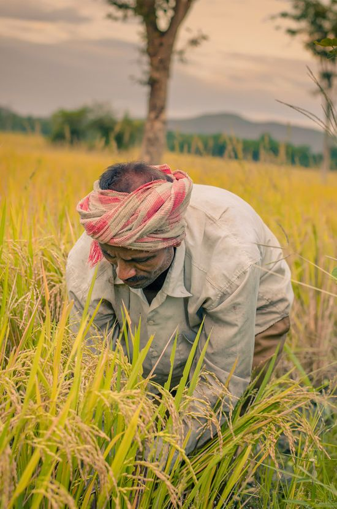
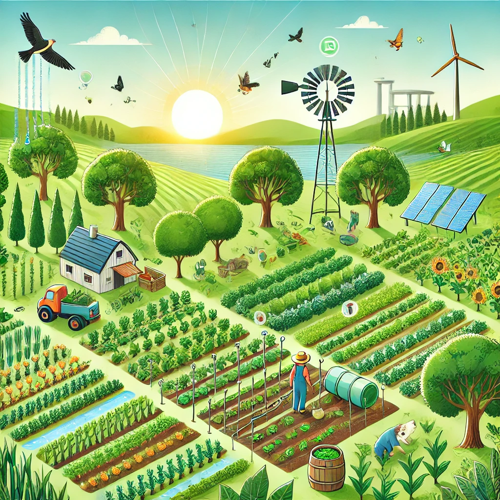

Agriculture in M.Agraharam has a deep-rooted history, passed down through generations. Our village is known for its sustainable farming practices and commitment to organic cultivation.

Our hardworking farmers are the backbone of our village, using innovative techniques alongside traditional methods to produce high-quality crops.

We focus on eco-friendly and sustainable agricultural practices such as crop rotation, organic manure, and water conservation to protect the environment.